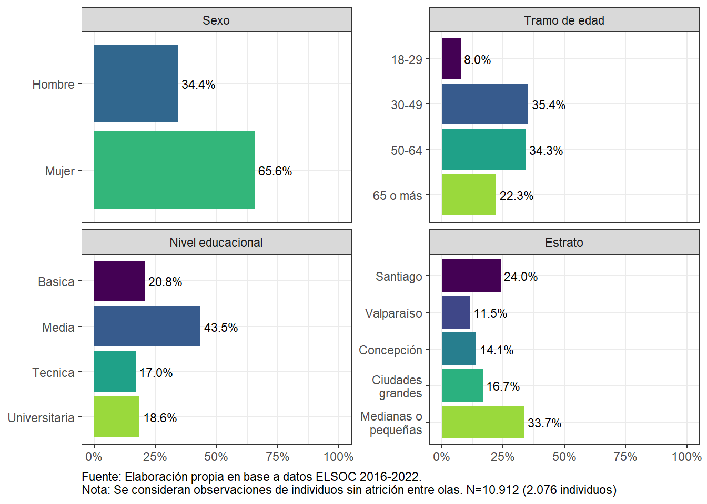

Capítulo 1 Presentación del estudio
1.1 Sobre COES
El Centro de Estudios de Conflicto y Cohesión Social (COES) desarrolla investigación colaborativa en temas relacionados al conflicto y la cohesión social en Chile, por medio de un equipo multidisciplinario proveniente de las ciencias sociales y humanidades. COES centra sus actividades académicas y de difusión en el análisis de las múltiples manifestaciones del conflicto y cohesión social en Chile, sus causas, así como también su contexto cultural e histórico.
COES está patrocinado por la Universidad de Chile y la Pontificia Universidad Católica de Chile, y como instituciones asociadas se encuentran la Universidad Diego Portales y la Universidad Adolfo Ibáñez. COES cuenta con el apoyo del Fondo de Financiamiento de Centros de Investigación en Áreas Prioritarias (FONDAP, dependiente de la Agencia Nacional de Investigación y Desarrollo (ANID) del Ministerio de Ciencia, Tecnología, Conocimiento e Innovación (MinCiencia). ELSOC además cuenta como socio al Instituto Milenio para la Investigación en Depresión y Personalidad (MIDAP).
1.2 Sobre ELSOC
El Estudio Longitudinal Social de Chile (ELSOC) es una encuesta panel, representativa de la población nacional urbana, que analiza la estabilidad y cambio de las creencias, actitudes y percepciones que tenemos los chilenos y chilenas respecto de la convivencia y del conflicto, la cohesión y una amplia gama de aspectos políticos y sociales a lo largo del tiempo.
Este estudio sigue la evolución de cerca de 4.500 chilenos y chilenas a lo largo de los últimos 7 años. Actualmente, se encuentran disponibles 6 olas del estudio, abarcando el período entre 2016 y 2022. Sus temas de estudio y su aspecto longitudinal convierten a ELSOC en un recurso único en Chile y América Latina para analizar la evolución de la sociedad chilena y para el desarrollo de las ciencias sociales en Chile.
Durante los últimos años, ELSOC se ha consolidado como un importante insumo para el desarrollo de investigación científica y aplicada en ciencias sociales. En el sitio web de (ELSOC)(https://coes.cl/encuesta-panel/) se puede acceder a más información sobre el estudio.
1.3 Foco en el cambio longitudinal
Radiografía del Cambio Social tiene como objetivo fundamental caracterizar la estabilidad y el cambio en opiniones, actitudes y conductas de los participantes a lo largo del tiempo, enfocándose en distintas dimensiones de la cohesión y conflicto en Chile.
Para el logro de dicho objetivo, el presente reporte se centrará en un subconjunto de participantes del estudio: Desde la muestra original, los 1.303 entrevistados y entrevistadas que participaron en las seis olas de ELSOC, y desde la muestra refresco, los 770 entrevistados y entrevistadas que participaron en las últimas cuatro olas sin excepción. Dado lo anterior, se cuenta con 2.076 participantes, submuestra que será la base empírica de los hallazgos expuestos en las siguientes secciones.
A continuación se describe a este grupo de participantes según los mismos atributos sociodemográficos (sexo, edad, educación y zona de residencia). Tal como se observa en el Gráfico 1.1, existe un predominio de mujeres en la muestra; las edades de los participantes de concentran fundamentalmente entre los 30 y 65 años de edad. Adicionalmente, la maroría de la muestra tiene educación media o superior y viven en ciudades de medianas y pequeñas y con una alta presencia de habitantes de Santiago.
Figura 1.1: Composición de muestra longitudinal
Los resultados que se presentan a continuación incorporan el diseño muestral complejo de la encuesta, por lo que incorporan los ponderadores muestrales ajustados a población regional y sexo, según estrato y conglomerado muestral.